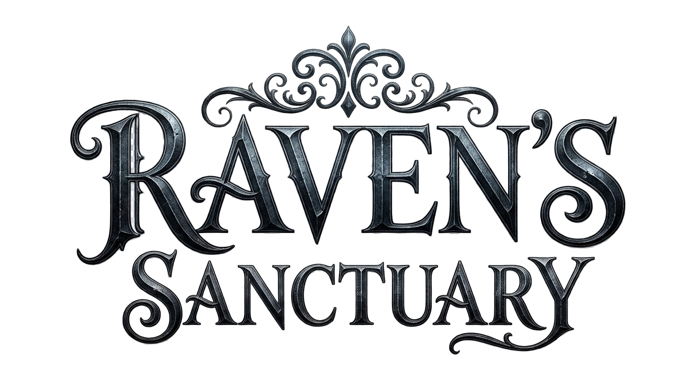

In the quiet space between memories and tomorrow, music becomes the bridge. It carries every love we've known, every soul we've met, and every moment that shaped who we are. Perhaps that's why songs never truly end—they keep the people we cherish forever connected to our hearts.